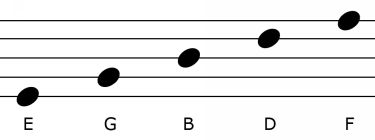
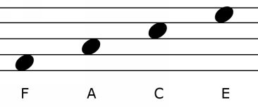
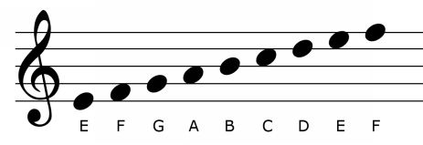

The heart of a piece of sheet music is the staff itself. This consists of multiple parts, but the most fundamental are the horizontal lines running across the page. These are the skeleton of the staff or staves, and they contain much of the information that will be used to communicate the harmonic and melodic content of a piece.
Each staff contains five horizontal lines. Each of those lines, as well as each of the spaces between those lines, denotes a particular note, or pitch. The exact note denoted by those lines is determined by the staff's clef (more on this in a separate section), but in the most common clef – the treble clef (shown at the beginning of the staff on Figure 1) – the notes are as follows:
From bottom to top, the five lines of the treble clef denote: E (above middle C – more on this soon), G, B, D, and F.

Figure 1.6.1.
From bottom to top, the four spaces between those lines denote: F, A, C (an octave above middle C), E.

Figure 1.6.2.
Notice that notes ascend by one letter each as you move up the lines and spaces, and descend by one letter each as you move down the lines and spaces.

Figure 1.6.3. The treble clef at the beginning of the staff determines the note names and their pitches on each of the lines and spaces in-between.
These letters represent the notes of the C Major scale (or its enharmonic equivalent, the A Minor scale). As we will see, this set of notes can be altered by changing the key of the piece. When the key has been changed, these notes are changed to represent the diatonic major (or relative minor) scale associated with that key. Without key alteration, however, those notes – descending to ascending; E, F, G, A, B, C, D, E, F – are the notes of the staff in standard treble clef.